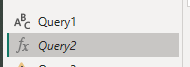

Intermediate Power BI (session 4)
Power BI
intermediate
Intermediate Power BI course
PQM
This is part of our intermediate-level Power BI desktop course. The course structure is as follows:
- session 1 (this session): a simple build-a-dashboard session as a warmup, reminder about core Power BI techniques, and sharing some suggestions for good workflow practices
- session 2: DAX language foundations, including FILTER and CALCULATE
- session 3: core PowerQuery functions to manage sources, join data sets, pivot, and tidy values
- session 4 (this session): PowerQuery M language foundations, including a basic overview of syntax, a core function toolkit, advanced mode, and reproducibility
- session 5: a second, more ambitious, build-a-dashboard session to put all that PowerQuery and DAX knowledge into practice
Previous attendees have said…
- 22 previous attendees have left feedback
- 95% would recommend this session to a colleague
- 100% said that this session was pitched correctly

NoteThree random comments from previous attendees
- Brilliant session today, was sad I missed the earlier sessions as I’m sure they will have been beneficial too. Huge thanks to Brendan! :)
- Found this session the most challenging and can’t see as much value as others. That said though, I appreciate what you say about finding the language in forums/google etc and knowing where to put them - I tend to use Youtube so I can follow along more like in these sessions.
Maybe I will find this more useful than I realise at present. Biggest issue is practicing these things to embed in memory - even then, after a few hours/decent break away, I find it hard to remember and go back and get the same results as I may have in the few hours after when playing about! - great session as always.
TipForthcoming session(s)
| Booking link | Date |
|---|---|
| Intermediate Power BI (session 4) | 10:00-12:00 Tue 19th May 2026 |
Session aim
- to introduce the PowerQuery M language
Where does this fit in?
- session 1: a simple build-a-dashboard session as a warmup, reminder about core Power BI techniques, and sharing some suggestions for good workflow practices
- session 2: DAX language foundations, including FILTER and CALCULATE
- session 3: core PowerQuery functions to manage sources, join data sets, pivot, and tidy values
- session 4: PowerQuery M language foundations, including a basic overview of syntax, a core function toolkit, advanced mode, and reproducibility
- session 5: a second, more ambitious, build-a-dashboard session to put all that PowerQuery and DAX knowledge into practice
Session outline
- what’s PQM?
- setting values and creating lists
- the Advanced Editor
- basic syntax:
let/in - defining and using functions
What’s PQM?
- formula language used in Power Query
- similar to Excel formulas
Getting started
- open Power BI
- create a blank report
- then click
Tranform datato open PQ - add a blank query
Add a value to that query
- you can edit PQM in the formula bar
- let’s start with the traditional expression:
Hello world!- you don’t need quotes
- call this a primitive value
NoteTask
- add
"Hello world"to the formula bar
Lists
- an especially-useful kind of value: the list
Note
- make a new blank query
- in the formula bar, after the equals-sign, type a
{, then some comma-separated numbers, then a closing}
Tables
- can be constructed from lists:
= Table.FromList({"apple", "banana"}, null, {"froot"})
Functions
- PQM has 700+ functions
- some can be used directly on values
NoteTask
- update your hello world to
= Text.Lower("Hello world")in the formula bar
Warning
- PQM is case-sensitive, unlike basically all the other Microsoft formula languages:
Query steps
- you can add query steps using the Add Step (\(fx\)) button:
NoteTask
- Add a step, and insert the formula
= Text.Proper(Source)
-
Sourcein the formula is the name of your first step - That should create a new step named
Custom1
Advanced editor
- you can do more interesting work in PQM using the Advanced Editor
NoteTask
- please open the
Advanced Editornow
Advanced editor
- the advanced editor should contain your two query steps:
let
Source = Text.Lower("Hello world!"),
Custom1 = Text.Proper(Source)
in
Custom1
let/in
- let statements are the basic structural building-block of PQM
- the
letpart contains a series of steps - the
inpart returns the result of those steps
let
- each line of the
lethas a step name, and an expression:name = expression
- each expression (apart from the source) refers to a previous step
- in our example, we make a step named
Source, which contains our lowercase"hello world" - we then pass it to a second step named
Custom1where we transform it into Proper Case
NoteTask
- rename the second step to
proper_case
in
- the
insection is where we return a result from our query - you’ll need to match the name in
into the correct stage of your query - almost always the last value
NoteTask
- update line 5 (after the
in) to use your new name forCustom1 - then select
Doneto return to Power Query - you should see your new step name in theApplied Stepsmenu
Query steps
- we can use the Advanced Editor to change the sequence of query steps
NoteTask
open the advanced editor
-
break down your source step into two steps:
- a
Sourcestep, where we input the “Hello world” primitive value - a
lower_casestep, where we use theText.Lowerfunction onSource
- a
make sure your lines end with
,(except the final line ofletandin)make sure your names link up correctly, and then apply the changes.
you should see the change in your
Applied Stepspane
Query steps
- your query should now read:
- those names should be reflected in the query steps view:
Nested let
- we could re-arrange our expression to use nested
lets - this is helpful when things grow more complex
let
lower_case =
let
Source = "Hello world!"
in
Text.Lower(Source),
proper_case = Text.Proper(lower_case)
in
proper_caseDefining functions
- we can define functions of our own
- let’s make one now that prints “Hello world!” for us
NoteTask
- make a new blank query and open it in the advanced editor populate with the code below
let
hw = () => "Hello world!"
in
hw-
hwhere is an ordinary step name -
()will contain our parameters -
=>defines this as containing a function
Naming functions
- that creates a new function
- note that the function name will correspond with our query name (it’s not the step name): 
- we could use that function as-is:
- but properly-named functions are much more useful: do that by renaming the query as a whole to
hw
Using functions
- functions defined in this way are global: we can use them in any other query
- so
hw()will work in Query1 to generate ourHello world!text:Source = hw() - the order of queries (Query1, Query2, etc) doesn’t affect function definitions and use
- so
- but within a query, you’ll need to define a function before you can use it
Defining functions within queries
let
hw2 = () => "Hello world!",
Source = hw2(),
lower_case = Text.Lower(Source),
proper_case = Text.Proper(lower_case)
in
proper_case-
hw2()has local scope: you can’t use it in other queries
Add a parameter
Note
- make a new blank query and name it
lower_proper - in the formula bar, define the function
= (x) => Text.Proper(Text.Lower(x)) - check the parameter option that should appear below the formula bar:
Re-edit your original query
- to use
lower_properinstead ofText.Loweretc
let
Source = hw(),
proper_case = lower_proper(Source)
in
proper_caseBonus: types
- you can specify types in your function:
= (x as text) as text => Text.Proper(Text.Lower(x))